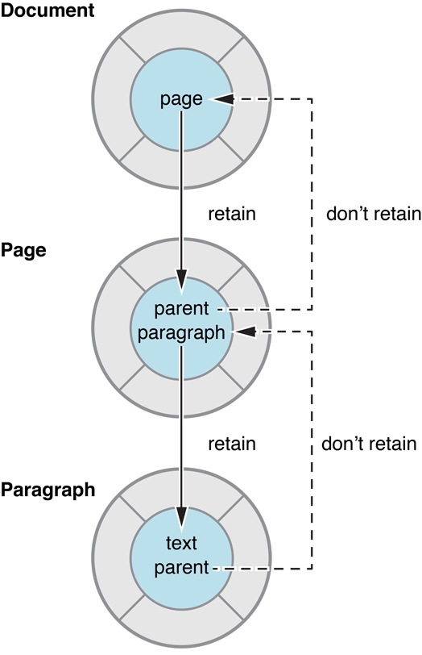

iOS MRC 内存管理的实用技巧
在上一篇文章中提到了 iOS MRC 内存管理的基本原则。
基于引用计数的内存管理策略相当简单，所以对应的需要开发者注意的点就会很多。让众多开发者都能掌握内存管理知识并合理的应用在日常开发中几乎是件不可能的事情。
所以，苹果只能在官方文档中尽量给到一些合理正确的规范与技巧，以便于降低开发者处理内存管理的难度和门槛。官方文档可参考 Practical Memory Management，我翻译了一份，可以参考 实用的内存管理。
官方文档总是讲的很精准、权威，很多时候看官方文档比去 CSDN 上阅读被复制黏贴了 N 遍的文章要高效的多。
基于官方文档，整理和总结如下。
使用访问器让内存管理更加容易
所谓访问器，其实就是普通的 getter 和 setter。官方推荐将内存管理也就是引用计数管理的代码，放到访问器中，然后在业务逻辑中使用访问器。
官方提到这样会让内存管理编的更简单，降低出错的几率。这个是必然的。我觉得还有两点很重要：
- 精简和统一内存管理代码，便于调试和维护。
- 将内存管理代码和业务代码分离，从设计上更清晰整洁。
假设有个变量 count。
@interface Counter : NSObject
@property (nonatomic, retain) NSNumber *count;
@end;
在 getter 中，只需返回合成的实例变量，不需要 retain 或 release。
- (NSNumber *)count {
return _count;
}
在 setter 方法中，如果其他所有人都遵循相同的规则，那么其他人很可能随时让 newCount 的引用计数减一，从而导致 newCount 被释放，所以你必须先通过 retain 使其引用计数加一。然后，你必须要把 _count 的引用计数减一。
在 OC 中，对一个 nil 对象发消息，是被允许的，所以即使 _count 没有被设置过，对其调用 release 也没事。
这里官方提到了一个很好的注意点：必须先把 newCount 的引用计数加一，然后再把 _count 的引用计数减一，否则如果 newCount 和 _count 是同一个对象，先 release 可能会让对象立刻被释放。
- (void)setCount:(NSNumber *)newCount {
[newCount retain];
[_count release];
// Make the new assignment.
_count = newCount;
}
定义好访问器之后，推荐在代码中使用访问器设置变量。
假设想实现一个重置计数器的方法。你有几个选择，不使用访问器的时候可以这么写
- (void)reset {
NSNumber *zero = [[NSNumber alloc] initWithInteger:0];
[_count release];
_count = zero;
}
但是，这种绕过访问器直接赋值的操作，就是不给 Apple 面子啊。
面子是小事，这么写很难维护，而且容易出错，因为你必须要想着什么时候 retain，什么时候 release。
还要注意，这种方式更改变量是不兼容 KVO 的。
使用访问器的话，就比较简洁了：
- (void)reset {
NSNumber *zero = [[NSNumber alloc] initWithInteger:0];
[self setCount:zero];
[zero release];
}
或者你可以使用 autorelease，两行代码就可以搞定：
- (void)reset {
NSNumber *zero = [NSNumber numberWithInteger:0];
[self setCount:zero];
}
不要在 init 和 dealloc 方法中使用访问器
上面推荐使用访问器精简和聚合内存管理的逻辑，这里提了个例外的case。在 init 和 dealloc 方法中不要使用访问器。
为了在 init 中初始化一个变量，你需要这么实现：
- init {
self = [super init];
if (self) {
_count = [[NSNumber alloc] initWithInteger:0];
}
return self;
}
如果想把变量初始化成非零值，可以这么实现：
- initWithCount:(NSNumber *)startingCount {
self = [super init];
if (self) {
_count = [startingCount copy];
}
return self;
}
由于 Counter 类有一个对象实例变量，还必须实现 dealloc 方法。把所有实例变量的引用计数减一，并最后调用 super 方法：
- (void)dealloc {
[_count release];
[super dealloc];
}
至于为何不能用访问器，官方文档里没说，stackoverflow 上有个答案提到了几点原因：
why-shoudnt-i-use-accessor-methods-in-init-methods
Why shouldn't I use Objective C 2.0 accessors in init/dealloc?
比较认可的解释是：在 init 和 dealloc 中使用访问器可能会引起潜在的问题。
init 中是负责基础的初始化逻辑，逻辑要尽量轻，不引入不必要的逻辑。如果调用访问器的话，很可能在访问器里做了懒加载。如果直接调用访问器的话，就会让懒加载失效。甚至是在访问器里做了比较重的逻辑，导致 init 耗时增大。
- (NSMutableDictionary *) myMutableDict {
if (!myMutableDict) {
myMutableDict = [[NSMutableDictionary alloc] init];
}
return myMutableDict;
}
dealloc 是负责释放资源清理现场的，如果调用访问器，就可能执行了很多不必要甚至引起 bug 的逻辑：
-(void) setFoo:(Foo*)foo
{
_foo = foo;
[_observer onPropertyChange:self object:foo];
}
-(void) dealloc
{
...
self.foo = nil;
}
使用弱引用来避免循环引用
对一个对象 retain，会使该对象的引用计数加一。在引用计数变为零之前，无法释放该对象。因此，如果两个对象可能有循环引用(即它们彼此有一个强引用)，那么就会出现一个称为retain cycle的问题（可能是两个对象相互引用，也可能是多个对象之间相互引用，最终形成一个环）。
图 1 中显示的对象关系演示了一个潜在的 retain cycle。Document 对象对文档中的每个页面都有一个 Page 对象。每个 Page 对象都有一个跟踪其所在文档的属性。如果 Document 对象有一个指向 Page 对象的强引用，而 Page 对象有一个指向 Document 对象的强引用，那么两个对象都不能被释放。在释放 Page 对象之前，Document 的引用计数不能变为零，而在释放 Document 对象之前，Page 对象不会被释放。

使用弱引用可以解决 retain cycle 的问题。弱引用是一种非拥有关系，其中源对象不保留它有引用的对象。
然而，要保持对象图完整，必须在某个地方有强引用(如果只有弱引用，那么 Page 和 Document 可能没有任何所有者，因此需要释放)。因此，Cocoa 建立了一个约定，即“父”对象应该保持对其“子”的强引用，而子对象应该对其父对象有弱引用。
因此，在图 1 中，Document 对象有一个对其 Page 对象的强引用(retain)，而 Page 对象有一个对 Document 对象的弱引用(不retain)。
避免正在使用的对象被释放
Cocoa 的引用策略指定接通过函数传入的对象通常在调用方法的范围内保持有效。也可以返回通过函数参数传递的对象，而不必担心它被释放。对于应用程序来说，对象的 getter 方法是否返回缓存的实例变量或计算值并不重要。重要的是，对象在您需要它的时候保持有效。
这个规则偶尔也有例外，主要分为两类。
- 从基本集合类之一中删除对象时
heisenObject = [array objectAtIndex:n];
[array removeObjectAtIndex:n];
// heisenObject could now be invalid.
当一个对象从一个基本集合类中移除时，它将被发送一个release(而不是autorelease)消息。如果集合是被删除对象的唯一所有者，则立即释放被删除的对象(本例中的heisenObject)。
- 当“父对象”被释放时
id parent = <#create a parent object#>;
// ...
heisenObject = [parent child] ;
[parent release]; // Or, for example: self.parent = nil;
// heisenObject could now be invalid.
在某些情况下，您从另一个对象获取一个对象，然后直接或间接地释放父对象。如果释放父对象导致它被释放，而父对象是子对象的唯一所有者，那么子对象(本例中的heisenObject)将同时被释放(假设它是在父对象的dealloc方法中被发送的是一个release而不是一个autorelease消息)。
为了防止这些情况，您在接收heisenObject时引用它，并在使用完它时释放它。例如:
heisenObject = [[array objectAtIndex:n] retain];
[array removeObjectAtIndex:n];
// Use heisenObject...
[heisenObject release];
集合拥有它们所包含的对象
当您将对象添加到集合(例如数组、字典或集合)时，集合拥有该对象的所有权。当对象从集合中移除或集合本身被释放时，集合将放弃所有权。因此，例如，如果你想创建一个数字数组，你可以做以下任何一种:
NSMutableArray *array = <#Get a mutable array#>;
NSUInteger i;
// ...
for (i = 0; i < 10; i++) {
NSNumber *convenienceNumber = [NSNumber numberWithInteger:i];
[array addObject:convenienceNumber];
}
在上面这个例子中，你没有调用 alloc，所以也就不用调用 release。addObject 时，array 会 retain convenienceNumber。
NSMutableArray *array = <#Get a mutable array#>;
NSUInteger i;
// ...
for (i = 0; i < 10; i++) {
NSNumber *allocedNumber = [[NSNumber alloc] initWithInteger:i];
[array addObject:allocedNumber];
[allocedNumber release];
}
在这种情况下，您需要在 for 循环的范围内发送给 allocedNumber 一个 release 消息来抵消 alloc 增加的引用计数。由于数组在 addObject: 时 retain 了数字，所以在数组中它不会被释放。
要理解这一点，可以站在实集合类的人的角度。你要确保集合里的对象都不会被释放，所以当它们被传递进来时，你要向它们发送一条 retain 消息。如果它们被删除，您必须发送一个 release 消息，并且在自己的 dealloc 方法期间，任何未被 remove 的对象都应该被发送一个 release 消息。
总结
本文基于 MRC 内存管理的基本原则之上，列举了一些常见的内存管理技巧，以便于让开发者更好的处理内存问题。
如此基础和繁琐的内存管理逻辑不应该交给开发者去做，否则会给开发者增加很大的成本，而且不可避免的出现各种内存管理问题。
所幸苹果后面引入了 ARC，开发者终于不用再那么蛋疼的 retain release 了。但是 ARC 只是在编译器自动增加了 MRC 的内存管理代码而已，所以理解 MRC，才能更好的理解 ARC 的运行规则，提高对 iOS 内存管理的理解深度。
转载请注明出处：iOS MRC 内存管理的实用技巧 - 专业点
欢迎关注我的公众号

推荐

公众号推荐
欢迎关注我的公众号一起愉快的交流。